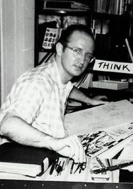

¿Que es MARVEL?
MARVEL es una de las marcas de entretenimiento mas grande y conocida del mundo, famosa principalmente por sus historias de superheroes. Aunque hoy se asocia mucho con el cine, su origen esta en los comics
¿Por que es importante?
MARVEL cambio la cultura popular al introducir el concepto de que los heroes no son solo sus poderes, sino tambien sus debilidades y sus valores. Sus historias suelen mezclar la fantasia y la ciencia ficcion con temas sociales reales, lo que ha generado una base de fans de todas las edadades en todo el mundo
¿Como surgio MARVEL?
MARVEL surgio en 1939 como una pequeña editorial de comics, pero su verdadera indentidad es la de heroes humanos y falibles en un multiverso compartido
¿Quines crearon MARVEL?

Stan Lee fue el creativo más importante de Marvel, creador de héroes como Spider-Man, Hulk e Iron Man, reconocido por humanizar a los superhéroes. Falleció en 2018 siendo considerado el "padre" del Universo Marvel.
Este es el texto que aparecerá al lado de la imagen.

Marin Goodman fue el fundador de Marvel. En 1939 el creo Timely Publications, que luego se transformo en Marvel Comics. Su rol fue principalmente empresarial: puso las bases de la compañia y promovio la creacion de nuevos superheroes, como LOS 4 FANTASTICOS.

Jack Kirby fue uno de los creadores más importantes de Marvel: dibujante y co-creador de héroes como Los 4 Fantásticos, Hulk, Thor, Iron Man, los X-Men, los Vengadores y Black Panther. Su estilo dinámico cambió los cómics de superhéroes, por eso es conocido como “El Rey de los Cómics”.
